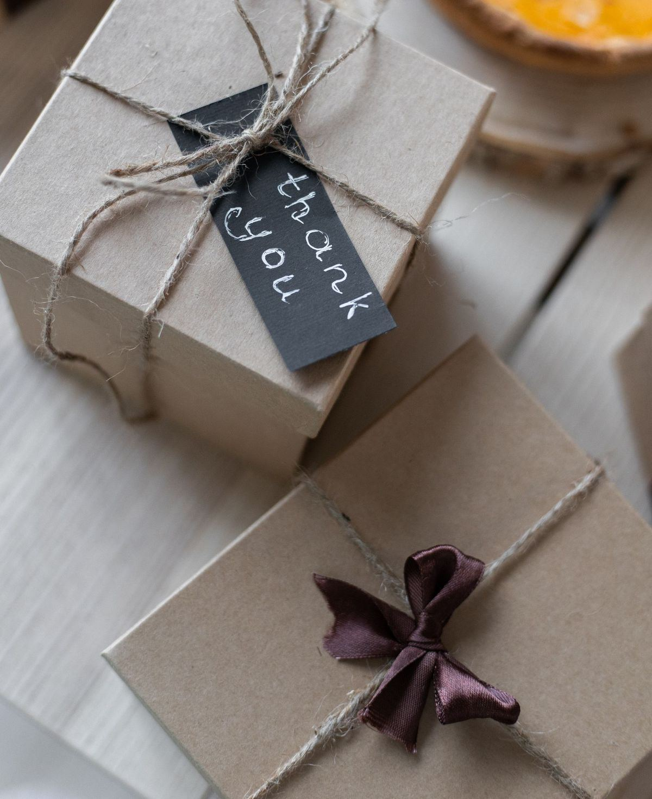

Gift guide
Labor and Delivery Nurse Gifts and Thank-You Basket Ideas

This guide contains affiliate links. If you buy through them, Holistic Life may earn a small commission at no extra cost to you. How we use affiliate links.
Quick answer
- The best labor and delivery nurse gifts are small, sealed and easy for a whole unit to share.
- A basket of wrapped snacks, pens, unscented hand cream and lip balm, plus a handwritten note, covers most units.
- Check the hospital's gift rules first. Cash, gift cards and costly gifts are often not allowed.
- For one nurse you know, compression socks and an insulated tumbler are safe choices.
The best labor and delivery nurse gifts are small, sealed and easy to share. A nurse on shift has little time and no room to carry things, so a gift that goes in a pocket or a break room cupboard works better than a big one.
A thank-you basket for the whole unit is the easiest way to do it. It needs no sizes and no guessing, and every shift gets a share. If you are shopping for one nurse you know, there are ideas for that further down. This is a nurse-run site, and everything below is the sort of thing a nurse would be glad to find at the station.
Check the gift rules first
Many hospitals limit what staff may accept from patients and families. Cash, gift cards and costly personal gifts are often not allowed, while sealed snacks that the whole unit shares are usually welcome. Rules differ from place to place, so call the unit or ask a staff member if you are unsure. It takes one minute.
What to put in a thank-you basket
Pick a handful of items from the list below, not all of them. Each one is small, useful on shift and easy to split between nurses. The first eight are for the basket. The last two are for one nurse you know. The links open a current selection on Amazon.
Keep food store-bought, sealed and individually wrapped. Some units cannot accept homemade food, and anything with nuts should be easy to spot on the label. Anything that goes on skin should be fragrance-free, because many units limit scents.
Individually wrapped snack variety box
Breaks are short and sometimes skipped. Single-serve snacks can be grabbed in a minute and shared across a unit.
What to look for
- Every item sealed on its own
- A mix of sweet and salty
- Twenty packs or more, so every shift gets some
Options that fit
- Frito-Lay Classic Snacks variety box, 40 single-serve packs A sweet and salty mix of chips, cookies, crackers and nuts (paid link)
- Nabisco Snacks Variety Pack, cookies and crackers, 20 packs Mini cookies and crackers, each in its own pack (paid link)
See more snack variety packs on Amazon (paid link)
Retractable gel pens
Pens go missing on every shift. A pack of good ones gets used and never feels like clutter.
What to look for
- Retractable, so there is no cap to lose
- Black ink, medium point
- A multi-pack, so there are enough to share
Options that fit
- uni-ball 207 retractable gel pens, black, 0.7 mm, 12 count Medium point, with a clip for a pocket (paid link)
- Pentel EnerGel RTX retractable gel pens, black, 0.7 mm, 12 count Medium line and quick-drying ink (paid link)
See more gel pens on Amazon (paid link)
Fragrance-free hand cream in travel tubes
Hands are washed or sanitized many times a shift, and skin can dry out. Small tubes tuck into a pocket.
What to look for
- Fragrance-free, since many units limit scents
- Pocket-size tubes
- Several tubes, so more than one nurse gets one
Options that fit
- Eucerin Advanced Repair hand cream, fragrance-free, 3 x 2.7 oz Three travel tubes in one pack (paid link)
See more travel hand creams on Amazon (paid link)
Unscented lip balm multi-pack
Hospital air can be dry, and lips feel it. Lip balm is small, useful and easy to split up.
What to look for
- Unscented or unflavored
- A tube, not a pot
- A pack of several
Options that fit
- Portland Bee Balm unscented lip balm, 9 count Nine tubes, so several nurses can each take one (paid link)
See more lip balm packs on Amazon (paid link)
No-crease hair ties
Long hair stays tied back for the whole shift. Soft ties hold without leaving a dent or pulling.
What to look for
- Soft, snag-free fabric or coil style
- Neutral colors that suit anyone
- A multi-pack
Options that fit
- Kitsch spiral hair ties, brunette, 8 count Coil style in a neutral shade (paid link)
- manipepe no-crease ribbon hair ties, neutral colors, 120 count Soft ribbon ties, plenty for a whole unit (paid link)
See more no-crease hair ties on Amazon (paid link)
Badge reels
Used every shift and easy to break. A few spares in a basket are welcome.
What to look for
- A retractable cord that feels strong
- A clip that swivels
- Plain designs that suit anyone
Options that fit
- Specialist ID black badge reels with swivel clip, 25 count Plain black reels with a clip that turns all the way round (paid link)
- koorito clear badge reels with swivel clip, 30 count Plain translucent reels with a swivel clip (paid link)
See more badge reels on Amazon (paid link)
Thank-you cards with envelopes
The note is the part nurses tend to keep. A pack lets you write one card for the basket and a few extras.
What to look for
- Blank inside, so you can write your own words
- Envelopes included
- Enough cards for more than one shift
Options that fit
- Hallmark thank-you cards with envelopes, blank inside, 48 count Four floral designs, twelve of each (paid link)
- Mr. Pen thank-you cards with envelopes, blank inside, 20 count A smaller pack in five designs (paid link)
See more thank-you cards on Amazon (paid link)
A small basket with handles
It holds everything, looks tidy on a counter, and the unit can reuse it afterward.
What to look for
- Handles that are easy to carry
- A size that fits on a counter
- Sturdy sides that keep their shape
Options that fit
- StorageWorks water hyacinth baskets with handles, 2 count Built-in handles and a metal frame, 13 inches long (paid link)
See more small baskets on Amazon (paid link)
Compression socks
For one nurse you know. Twelve hours of standing is hard on legs, and compression socks may help people who are on their feet all day.
What to look for
- Mild to moderate compression, often labeled 8 to 15 or 15 to 20 mmHg
- A wide top band that does not dig in
- A multi-pack, because one pair is always in the wash
See compression socks on Amazon (paid link)
Insulated tumbler with a lid and straw
For one nurse you know. Breaks get skipped, so a drink that stays cold all shift makes it easier to keep sipping.
What to look for
- A lid that seals
- A base that fits a cup holder
- Dishwasher-safe parts
Options that fit
- Stanley IceFlow 2.0 flip straw tumbler, 30 oz Flip straw snaps shut, fits a cup holder, dishwasher safe (paid link)
- BrüMate Era tumbler with handle and straw, 40 oz Leakproof lid, tapered to fit standard cup holders (paid link)
See more insulated tumblers on Amazon (paid link)
One basket or individual bags?
One shared basket at the nurses' station is the simplest. Every shift can reach it, and nobody is left out. Pack it ahead of time, bring it with you, and hand it over early in your stay so more than one shift can enjoy it.
Small bags feel more personal, but you rarely know how many nurses you will meet. If you go that way, make a few extra. Or do both: a basket for the unit and a card for the nurse who looked after you most.
What to write on the tag
Short is fine. Here are three lines you can copy or change:
- "Thank you for being so kind to us. This basket is for the whole team."
- "You made a hard day easier. We are very grateful."
- "Please share these with the next shift too."
A specific thank-you means the most. If a nurse did something that stood out, say what it was.
Gifts for a labor and delivery nurse you know
For a coworker swap, Christmas, graduation or Nurses Week, you can choose something personal. Compression socks and an insulated tumbler (picks 9 and 10) are safe for almost anyone. Shift work and long hours are linked to fatigue, so anything that makes a shift a little easier is appreciated. For socks, stay with mild to moderate compression. The firmest levels are usually sold by prescription, and anyone with a skin, circulation or nerve problem in the legs should ask their provider before wearing them.
For more ideas, see our guides to gifts for nurses and nursing graduation gift ideas. If your nurse packs meals, meal prep for 12-hour shifts pairs well with a new tumbler.
What to skip
- Homemade food. Some units cannot accept it.
- Scented lotions and candles. Many units limit scents.
- Cash and gift cards, unless the unit says they are fine.
- Alcohol.
- Anything that needs a fridge. There may be no room for it.
Frequently asked questions
Do labor and delivery nurses expect a gift?
No. Looking after you is the job, and nurses do not expect anything for it. A sincere, specific thank-you note is enough, and a small gift is a kind extra.
Can nurses accept gifts from patients?
Many hospitals limit what staff may accept from patients and families. Cash, gift cards and costly personal gifts are often not allowed, while sealed snacks shared by the unit are usually welcome. Rules differ, so call the unit or ask a staff member if you are unsure.
What do you put in a nurse thank-you basket?
Keep it small, sealed and useful: wrapped snacks, retractable pens, fragrance-free hand cream, unscented lip balm, no-crease hair ties and a handwritten card. Pick a few and skip the rest.
Sources
Save this guide for later
Tap a pin to save it to your Pinterest boards.